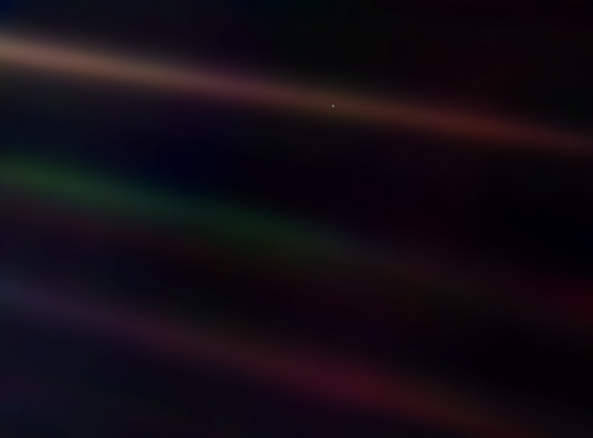

也许从浩瀚的宇宙中观察我们自己，才会获得更震撼的宁静：
Look again at that dot. That’s here. That’s home. That’s us. On it everyone you love, everyone you know, everyone you ever heard of, every human being who ever was, lived out their lives. The aggregate of our joy and suffering, thousands of confident religions, ideologies, and economic doctrines, every hunter and forager, every hero and coward, every creator and destroyer of civilization, every king and peasant, every young couple in love, every mother and father, hopeful child, inventor and explorer, every teacher of morals, every corrupt politician, every “superstar,” every “supreme leader,” every saint and sinner in the history of our species lived there–on a mote of dust suspended in a sunbeam.
The Earth is a very small stage in a vast cosmic arena. Think of the rivers of blood spilled by all those generals and emperors so that, in glory and triumph, they could become the momentary masters of a fraction of a dot. Think of the endless cruelties visited by the inhabitants of one corner of this pixel on the scarcely distinguishable inhabitants of some other corner, how frequent their misunderstandings, how eager they are to kill one another, how fervent their hatreds.
Our posturings, our imagined self-importance, the delusion that we have some privileged position in the Universe, are challenged by this point of pale light. Our planet is a lonely speck in the great enveloping cosmic dark. In our obscurity, in all this vastness, there is no hint that help will come from elsewhere to save us from ourselves.
The Earth is the only world known so far to harbor life. There is nowhere else, at least in the near future, to which our species could migrate. Visit, yes. Settle, not yet. Like it or not, for the moment the Earth is where we make our stand.
It has been said that astronomy is a humbling and character-building experience. There is perhaps no better demonstration of the folly of human conceits than this distant image of our tiny world. To me, it underscores our responsibility to deal more kindly with one another, and to preserve and cherish the pale blue dot, the only home we’ve ever known.
—Carl Sagan
我们成功地从外太空拍到宇宙中地球的照片，细心再看，你会看见一个小点。就是这里，就是我们的家，就是我们。在这个小点上，每个你爱的人、每个你认识的人、每个你曾经听过的人，以及每个曾经存在的人，都在那里过完一生。这里集合了一切的欢喜与苦难，数千个自信的宗教、意识形态以及经济学说，每个猎人和搜寻者、每个英雄和懦夫、每个文明的创造者与毁灭者、每个国王与农夫、每对相恋中的年轻爱侣、每个充满希望的孩子、每对父母、发明家和探险家，每个教授道德的老师、每个贪污政客、每个超级巨星、每个至高无上的领袖、每个人类历史上的圣人与罪人，都住在这里 — 一粒悬浮在阳光下的微尘。
地球是这个浩瀚宇宙剧院里的一个小小舞台。想想从那些将领和帝王们挥洒出的血河，他们的光荣与胜利只为了让他们成为了这一点上一小部分的短暂主宰。想想栖身在这点上一个角落的人正受着万般苦楚，而在几乎不能区分的同一点上的另外一个角落里亦同时栖身了另一批人。他们有多常发生误解？他们有多渴望杀了对方？他们的敌意有多强烈？
我们的装模作样，我们的自以为是，我们的错觉以为自己在宇宙里的位置有多优越，都被这暗淡的光点所挑战。我们的星球只是在这被漆黑包裹的宇宙里一颗孤单的微粒而已。我们是如此的不起眼——在这浩瀚之中，我们不会从任何地方得到提示去拯救我们自身。
一直有人说天文学是令人谦卑的，同时也是一种塑造性格的学问。对我来说，希望没有比这张从远处拍摄我们微小世界的照片更好的示范，去展示人类自大的愚蠢。对我来说，这强调了我们应该更加亲切和富有同情心地区对待身边的每一个人，同时更加保护和珍惜这暗淡蓝点，这个目前我们所知的唯一的家……
-卡尔萨根